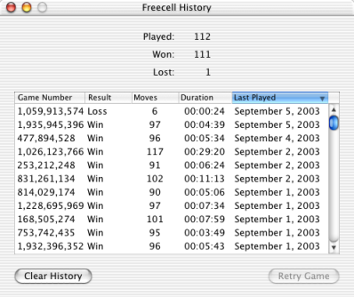

Freecell help
Freecell help
History window
Freecell keeps a record of the games you've won and lost. You can view the list by choosing History from the Freecell menu.

The list only keeps one entry for each game number. So if you lose a game, you can retry it until you win, and keep your record sheet clean.